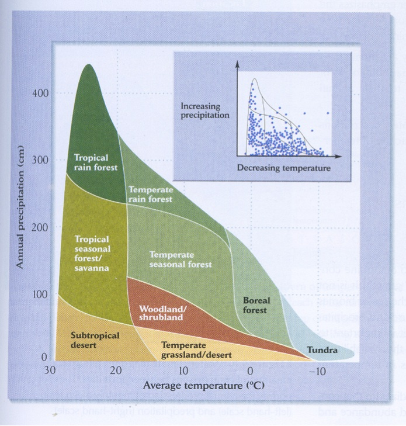
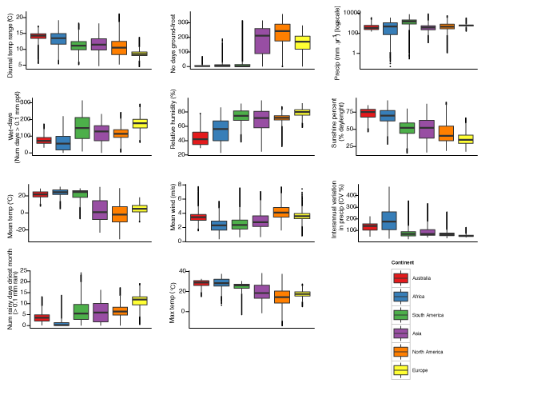
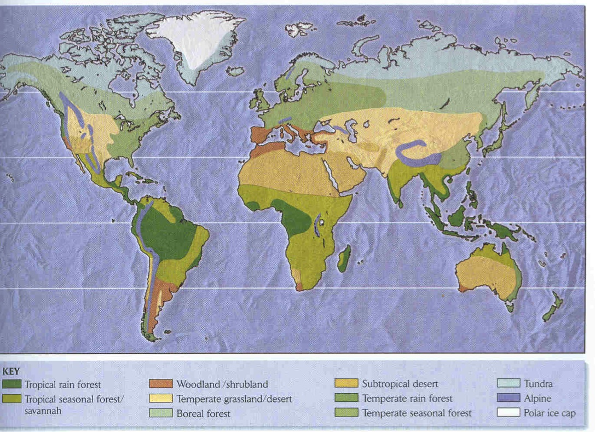
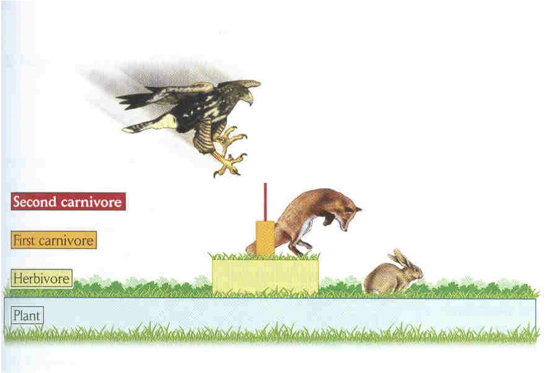
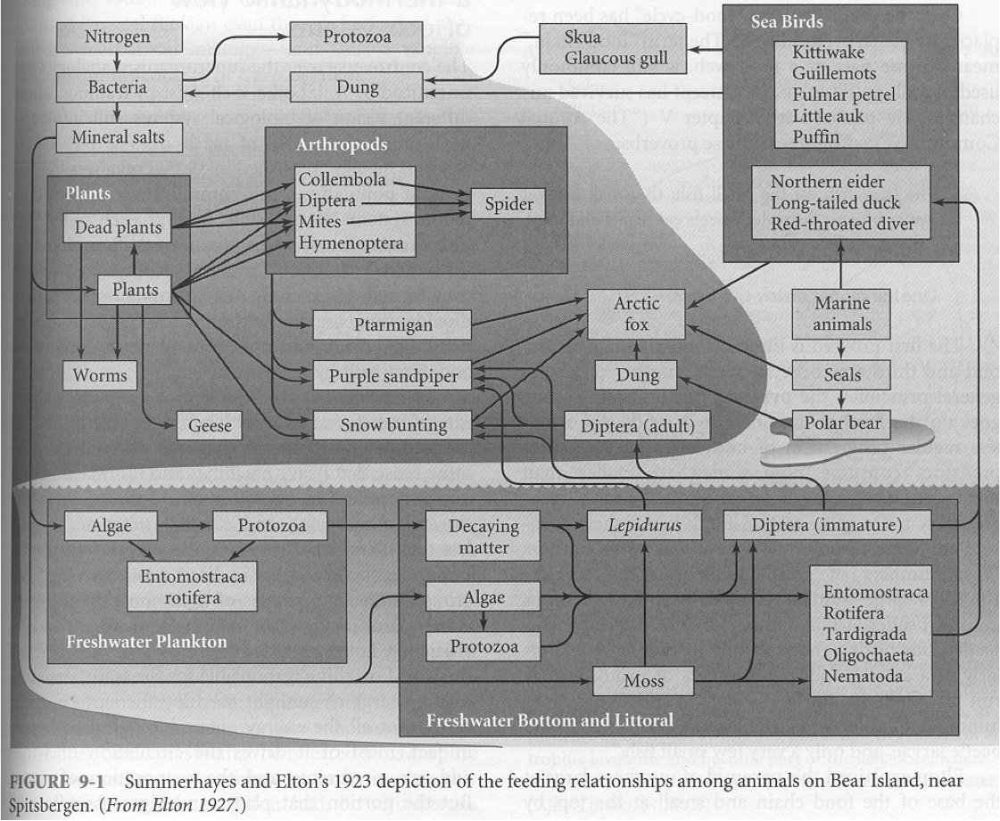

name: inverse layout: true class: center, middle, inverse --- # Ecosystems .footnote[follow along at wcornwell.github.io] --- layout: false .left-column[ ## What is an ecosystem? ] .right-column[ - *Population*: Interacting individuals of the same species - *Community*: Interacting populations of different species - *Ecosystem*: Communities and the environment where they live ] --- class: center, top #Biome vs. Ecosystem ? -- ###Often used interchangably, but "biomes" are usually larger and refer more to the climate region; ecosystems are often smaller in geographic scale and refer more to the acctual organisms and their functions --- class: center, middle <img src="http://www.australiasoutback.com/~/media/Atdw/darwin-and-surrounds/Things%20to%20do/9000304/main/tnt_landscape__9024130_nttc_magnetic_termite_mounds__litchfield_park__6406l256.ashx?bc=White" alt="Drawing" style="width:550px;"/> ###In an ecosystem the organisms and the inorganic factors alike are components which are in relatively stable dynamic equilibrium. - Tansley 1935 --- class: center, middle, inverse <img src="http://upload.wikimedia.org/wikipedia/commons/thumb/d/d0/Aerial_view_of_the_Amazon_Rainforest.jpg/1280px-Aerial_view_of_the_Amazon_Rainforest.jpg" alt="Drawing" style="width:700px;"/> --- class: center, middle, inverse <img src="http://upload.wikimedia.org/wikipedia/commons/2/2d/Picea_glauca_taiga.jpg" alt="Drawing" style="width:700px;"/> --- class: center, middle, inverse <img src="http://www.hayyoo.com/images/2011/blooming-desert.jpg" alt="Drawing" style="width:700px;"/> --- class: left, middle #Conceptual ideas: ###A simple scheme to keep the world's vegetation in your head -Is Australia weird? ###Understanding the basics of ecosystems -Connectedness -Flow of energy and elements -Why is the world green? --- class: center, middle, inverse # Why is the world green (ususally)? <img src="http://cdn.onegreenplanet.org/wp-content/uploads/2010/10//2011/11/oregon-forest_7.jpg" alt="Drawing" style="width:550px;"/> --- class: center, middle, inverse #An accurate view of the world: species are unique entities <img src="http://home.messiah.edu/~chase/articles/gauchchase/imagepage3a.png" alt="Drawing" style="width:550px;"/> (Robert Whittaker 1967) --- class: center, middle, inverse <img src="http://www.rowland.harvard.edu/rjf/lewis/images/InvassphotosRow.jpg" alt="Drawing" style="width:550px;"/> --- name: how layout: false .left-column[ ## Accuracy in a complex world overwhelms the brain ] .right-column[ Current diversity ```remark # Angiosperms 304,419 species* --- # Gymnosperms 1,104 species* ``` .slides[ .first[ Gymnos <img src="http://static.guim.co.uk/sys-images/Guardian/Pix/pictures/2012/8/28/1346149759217/A-pine-cone-008.jpg" alt="Drawing" style="width: 90px;"/> ] .second[ Angios <img src="http://upload.wikimedia.org/wikipedia/commons/8/89/Pretty_purple_wild_geranium_flower_in_bloom_geranium_maculatum.jpg" alt="Drawing" style="width:90px;"/> ] ] .footnote[* source [the plant list](http://www.theplantlist.org/)] ] --- class: center, middle, inverse # Robert Whittaker 1975 <p></p> --- class: center, middle #Is Australia (climatically) weird? <p></p> --- class: center, middle, inverse <p></p> --- class: left, middle ## Features of a useful ecosystem classification: -simple enough to be useful in mapping, thinking, and planning -capture something measurable about the organisms on the ground -designed well for the "extent" of the study or plan -consistently "lumped" or "split" -useful for "ecosystem-level conservation planning" --- class: center, middle, inverse <img src="http://covers.booktopia.com.au/big/9780731367801/ocean-shores-to-desert-dunes.jpg" alt="Drawing" style="width:750px;"/> --- #PAUSE --- class: center, middle, inverse <p></p> --- class: center, middle, inverse ##Food webs <p></p> Ricklefs and Miller p175 --- class: center, middle, inverse #Organizing concepts: energy and elements <img src="http://upload.wikimedia.org/wikipedia/commons/f/fe/Nitrogen_Cycle.svg" alt="Drawing" style="width:550px;"/> --- class: center, middle ##Gross Primary Production (GPP): Photosynthesis 6 CO<sub>2</sub> + 6 H<sub>2</sub>O + solar energy → C<sub>6</sub>H<sub>12</sub>O<sub>6</sub> + 6 O<sub>2</sub> <img src="http://www.giglig.com/wp-content/uploads/2011/07/photosynthesis.jpg" alt="Drawing" style="width:250px;"/> ##Net Primary Production (NPP): NPP = Photosynthesis - Autotrophic Respiration --- class: center, middle, inverse #The "stuff" that life (on earth) is made of <img src="http://upload.wikimedia.org/wikipedia/commons/8/86/Argonne's_Midwest_Center_for_Structural_Genomics_deposits_1,000th_protein_structure.jpg" alt="Drawing" style="width:550px;"/> --- class: center, middle ##What is the most common biological molecule on earth? --- class: center, middle ##What is the most common protein on earth? --- class: center, middle <img src="http://upload.wikimedia.org/wikipedia/commons/7/74/Rubisco.png" alt="Drawing" style="width:550px;"/> --- class: center, middle <img src="http://upload.wikimedia.org/wikipedia/commons/5/53/Plant_cell_wall_diagram.svg" alt="Drawing" style="width:550px;"/> --- class: center, middle <img src="http://www.nature.com/scitable/content/ne0000/ne0000/ne0000/ne0000/62238224/Sigman&Hain_NatureEdu-626_1_2.png" alt="Drawing" style="width:550px;"/> ###Sigman & Hain (2012) Nature --- Feedbacks --- class: center, top, inverse <img src="http://upload.wikimedia.org/wikipedia/commons/thumb/f/fb/Blue_Wildebeest%2C_Ngorongoro.jpg/260px-Blue_Wildebeest%2C_Ngorongoro.jpg" alt="Drawing" style="width:350px;"/> Animal tissues are about 15% nitrogen -- <img src="https://encrypted-tbn0.gstatic.com/images?q=tbn:ANd9GcRzMYhD_lOyPzNG6pAEesUU1DngwzTQgF_kO6vsej-yLBXMZGIOJw" alt="Drawing" style="width:350px;"/> Growing leaves are about ~3% nitrogen --- class: center, middle, inverse #Key elements for plants: ##Nitrogen (1.5% of healthy plant) ##Phosphorus (0.2% of healthy plant) ##Other stuff (base cations: CA, K, Mg) --- Uses of N --- Uses of P <img src="http://upload.wikimedia.org/wikipedia/commons/thumb/4/4c/DNA_Structure%2BKey%2BLabelled.pn_NoBB.png/1024px-DNA_Structure%2BKey%2BLabelled.pn_NoBB.png" alt="Drawing" style="width: 500px;"> --- <img src="http://upload.wikimedia.org/wikipedia/commons/8/81/ADN_animation.gif" alt="Drawing" style="width: 300px;"> --- <img src="http://graphics8.nytimes.com/images/2007/08/04/us/04phosphates-600.jpg" alt="Drawing" style="width: 300px;"> #A Phosphorus mine in Florida via NYtimes --- <img src="http://www.globalchange.umich.edu/globalchange1/current/lectures/kling/nitrogen_cycle/N_deposition.jpg" alt="Drawing" style="width: 300px;"> --- class: center, top, inverse <img src="http://upload.wikimedia.org/wikipedia/commons/1/13/TrophicWeb.jpg" alt="Drawing" style="width:750px;"/> --- class: center, top, inverse <img src="http://media.science360.gov/files/pic-day/a3e7b69d-905d-4905-8931-38e0421a6bf7-largeImage.jpg" alt="Drawing" style="width:750px;"/> --- class: inverse, bottom, inverse <img src="http://upload.wikimedia.org/wikipedia/commons/3/3c/Newark_cherry_blossoms.jpg" alt="Drawing" style="width:350px;"/> -- <img src="http://upload.wikimedia.org/wikipedia/commons/b/be/Cyanide-montage.png" alt="Drawing" style="width:250px;"/> --- class: center, top, inverse <img src="http://image.slidesharecdn.com/planttissues-131030112655-phpapp01/95/plant-tissues-1-638.jpg?cb=1383150635" alt="Drawing" style="width:650px;"/> Toughness - Fibres, lignified tissue, sclerids --- class: center, top, inverse <img src="http://38.media.tumblr.com/tumblr_lhqgqhZoix1qf71bqo1_500.jpg" alt="Drawing" style="width:450px;"/> --- class: center, top, inverse <img src="http://2.bp.blogspot.com/-BgfVJ2QWtbw/UCfIc2hJEXI/AAAAAAAAKxc/eHehw32MRnc/s1600/3+peat.JPG" alt="Drawing" style="width:650px;"/> --- class: center, top, inverse <img src="http://upload.wikimedia.org/wikipedia/commons/a/ac/Quercus_pagoda-stellate-hairs.jpg" alt="Drawing" style="width:650px;"/> Hairs - especially effective against (some) invertebrate herbivores --- class: center, top, inverse <img src="https://c2.staticflickr.com/6/5262/5641160016_5bbd6cac16_z.jpg" alt="Drawing" style="width:650px;"/> Spines - especially effective against vertebrate herbivores --- class: center, top, inverse <img src="http://joberts11.wikis.birmingham.k12.mi.us/file/view/SS0396_whoeatsWhomMap.jpg/291113731/SS0396_whoeatsWhomMap.jpg" alt="Drawing" style="width:350px;"/> -- <img src="http://www2.estrellamountain.edu/faculty/farabee/BIOBK/graphpred.gif" alt="Drawing" style="width:350px;"/> --- class: center, top, inverse <img src="http://upload.wikimedia.org/wikipedia/commons/c/cb/White-tailed_deer_(Odocoileus_virginianus)_grazing_-_20050809.jpg" alt="Drawing" style="width:550px;"/> ---